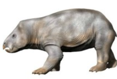

Terapsydy to bardziej zaawansowana grupa synapsydów. Posiadały wyprostowaną postawę ciała, silniejsze szczęki oraz bardziej wydajny sposób poruszania się niż ich przodkowie. Wiele terapsydów miało cechy przypominające współczesne ssaki, takie jak zróżnicowane zęby czy prawdopodobnie częściowe pokrycie ciała włosami. Terapsydy pojawiły się około 275 milionów lat temu. Z jednej z ich gałęzi wyewoluowały cynodonty, które dały początek ssakom.
⬅ Powrót